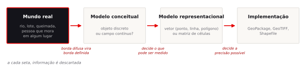
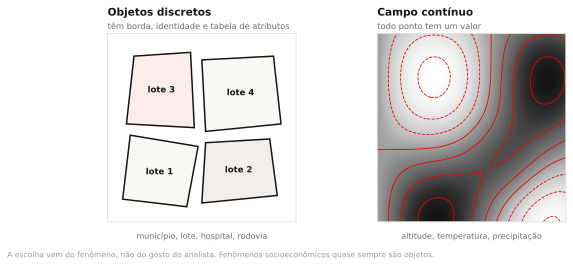
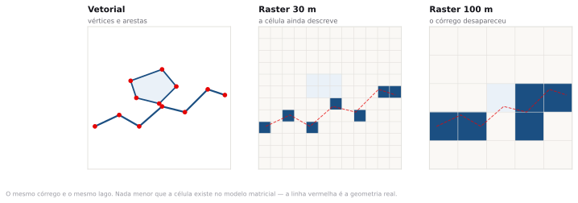
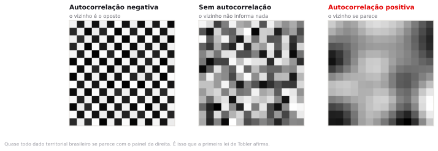
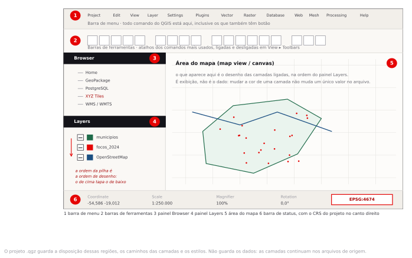
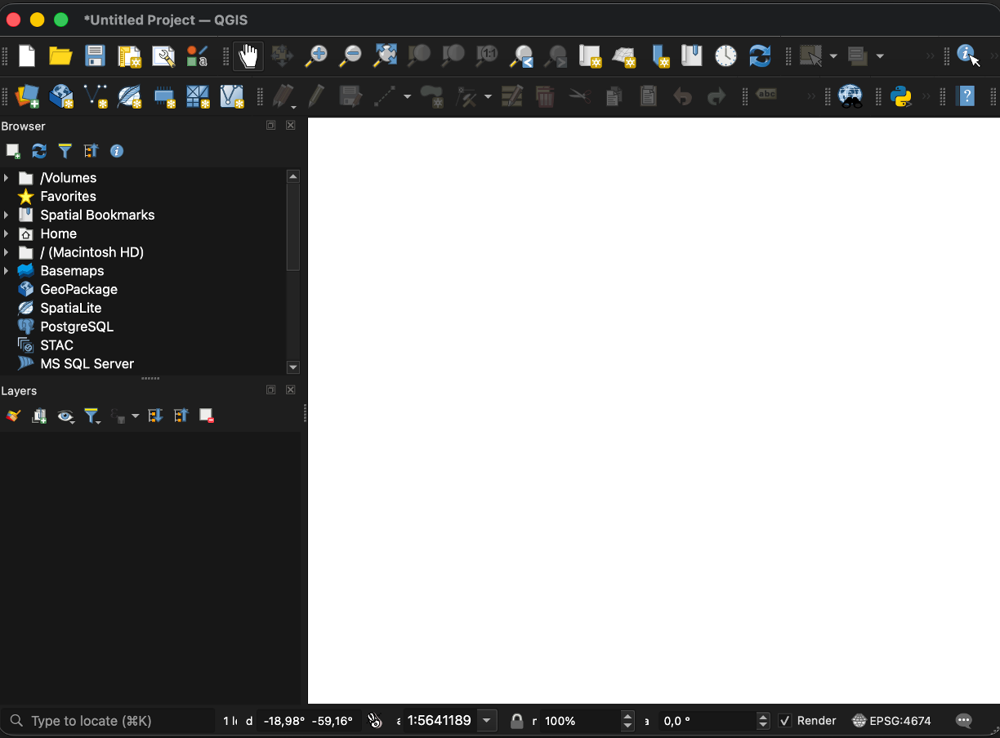
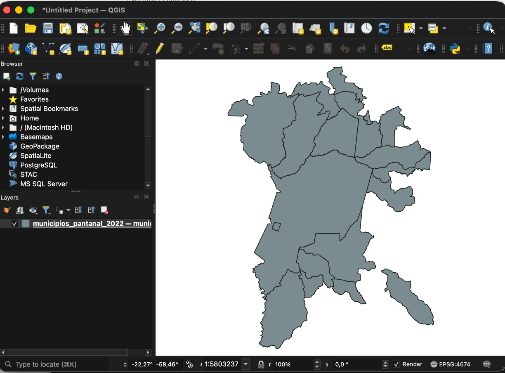

Abertura e fundamentação
Esta disciplina trata de um tipo específico de pergunta: aquela cuja resposta muda quando você pergunta onde. Saber que o Brasil produziu 160 milhões de toneladas de soja basta para a manchete. Quem analisa crédito rural, ou prepara uma ação civil pública sobre desmatamento, precisa de outra coisa: saber que essa produção se organiza em manchas contíguas, que atravessam divisas estaduais e avançam sobre um bioma específico, porque o risco de cada contrato depende de onde ele cai dentro dessa mancha. O QGIS entra como instrumento para enxergar e medir isso. O assunto do curso é a pergunta, não o software.
Ao longo do semestre você vai responder dez perguntas. Todas são brasileiras, todas usam dados públicos que você pode baixar hoje, e todas terminam em um número que alguém precisaria para decidir alguma coisa. Cado tema acrescenta uma capacidade nova, e nenhum tema depende de algo que ainda não foi ensinado.
Uma pergunta por encontro
Toda aula abre enunciando a pergunta do tema e mostrando por que a resposta ingênua falha. Depois vem a teoria que torna a pergunta respondível, o roteiro no QGIS que a responde, um exercício de quinze minutos para testar se a resposta é robusta, e o fechamento com o que você pode e o que não pode afirmar a partir dali.
As dez perguntas, e por que estão nessa ordem
O arco tem uma lógica de dependência. Você não consegue construir um indicador antes de saber cruzar duas bases, não consegue desconfiar de um mapa antes de saber fazer um, e não consegue medir acesso a um hospital antes de entender por que a distância em linha reta é insuficiente.
| Tema | A pergunta | O que você passa a saber fazer |
|---|---|---|
| 1 | Por que dizer onde muda a resposta? | Instalar o ambiente e separar dado espacial de dado georreferenciado |
| 2 | Quantos hectares queimaram de verdade? | Medir área e distância sem erro sistemático |
| 3 | Quem vive sem esgoto na minha cidade, e em qual quarteirão? | Cruzar geografia com tabela e construir um indicador próprio |
| 4 | Este mapa está me convencendo ou me enganando? | Produzir e auditar um mapa temático |
| 5 | Onde ainda cabe habitação social perto do metrô? | Encadear operações de sobreposição para responder adequação |
| 6 | O que acontece num município depende do vizinho? | Testar dependência espacial e localizar agrupamentos |
| 7 | Tenho uma lista de endereços. Como ela vira padrão no mapa? | Transformar endereço em ponto e descrever deslocamento no tempo |
| 8 | Tenho orçamento para intervir em cinco pontos. Quais? | Reduzir milhares de ocorrências a uma lista de prioridades |
| 9 | Quanto do meu município virou pasto desde 1985? | Trabalhar com raster e quantificar mudança de uso da terra |
| 10 | Quanta gente chega ao hospital em trinta minutos? | Medir acessibilidade pela rede real e comunicar o resultado |
Como você será avaliado
Três atividades práticas somam 30% da nota, a prova final vale 30% e o projeto em grupo, 40%.
As APS saem ao fim dos temas 4, 8 e 10, sempre com uma base de dados que você ainda não viu e uma pergunta que ainda não foi feita em aula. São feitas fora de sala e entregues pelo Blackboard.
A prova é conceitual: em vez de perguntar onde fica o menu do buffer, ela mostra um mapa, uma análise ou uma recomendação e pede diagnóstico: qual projeção está inadequada, qual classificação está enviesada, qual inferência os dados não sustentam, qual método está errado para a pergunta feita. Toda questão nasce de uma das dez unidades teóricas, e você vê o escopo de cada uma no fim da parte teórica de cada encontro.
O projeto é uma consultoria territorial. Seu grupo formula a própria pergunta, no mesmo formato das dez do semestre, e entrega diagnóstico, mapas, um webmap navegável e uma recomendação de uma página com as limitações declaradas. Metade da nota está na qualidade da pergunta e na honestidade sobre os limites do que você mediu.
Pense em uma decisão que alguém da sua área toma com frequência. Ela mudaria se quem decide soubesse exatamente onde as coisas estão?
Guarde essa resposta. Ela é o rascunho do seu projeto final.
Dado espacial e dado georreferenciado não são a mesma coisa
Comece por esta distinção, porque ela organiza o curso inteiro e costuma ser atropelada até em relatório profissional.
Um dado georreferenciado tem um atributo de localização amarrado a um sistema de referência. A planilha da Receita Federal com o endereço de cada CNPJ é georreferenciável. O cadastro do CNES com a latitude e a longitude de cada hospital já é georreferenciado. O que define a categoria é a existência de uma âncora: um par de coordenadas, um código de município, um CEP, algo que permita colocar aquela linha da tabela em um lugar do planeta.
Um dado espacial é outra coisa. É um dado no qual a proximidade importa para explicar o valor. O preço do metro quadrado num quarteirão de Pinheiros não é independente do preço no quarteirão ao lado. A produtividade da soja em Luís Eduardo Magalhães não é independente da produtividade nos municípios vizinhos, porque compartilham clima, solo, distância até o porto e o mesmo pacote tecnológico. Nesses casos existe dependência entre vizinhos, e ignorá-la produz análise errada.
Georreferenciado é uma propriedade do arquivo. Espacial é uma propriedade do fenômeno.
Quase todo dado público brasileiro relevante chega até você georreferenciado. O trabalho do analista é reconhecer quando o fenômeno por trás dele é espacial, e usar as ferramentas que levam a dependência a sério. A tema 6 é inteiramente sobre isso.
A ocorrência de dengue em um bairro é um dado espacial ou apenas georreferenciado? E o número de CNPJs abertos por município?
Na dengue, o vizinho contamina literalmente: o mosquito voa cerca de 100 metros e os moradores se deslocam. Já a abertura de CNPJ tem um componente de vizinhança mais fraco, mas não nulo, porque serviços se aglomeram. Quase nada é puramente independente. A pergunta útil não é "tem dependência?", é "a dependência é forte o bastante para mudar a minha conclusão?".
Como o mundo vira camada
Entre a paisagem lá fora e o arquivo no seu computador existem quatro etapas, e cada uma joga informação fora. Vale conhecer as quatro porque é nelas que moram os erros que você vai encontrar depois.

Começa no mundo real: um rio, um lote, uma queimada, uma pessoa que mora em algum lugar. Nada disso tem borda perfeitamente definida. O rio muda de largura na cheia, o limite da queimada é uma faixa de transição de dezenas de metros, e a pessoa dorme num lugar e trabalha em outro.
A segunda etapa é o modelo conceitual, onde você decide como aquilo existe. Duas escolhas estão disponíveis. Você pode tratar o espaço como uma coleção de objetos discretos, cada um com identidade e borda: o lote 45 da quadra 12, o município de Corumbá, o hospital das Clínicas. Ou pode tratá-lo como um campo contínuo, no qual toda posição tem um valor: altitude, temperatura, precipitação, índice de vegetação.

A escolha entre os dois modelos vem do fenômeno, não da preferência de quem analisa. Altitude é campo, porque existe altitude em todo ponto do terreno. Município é objeto, porque a divisa é uma convenção jurídica com um traçado definido. Fenômenos socioeconômicos quase sempre são objetos, porque nascem de unidades administrativas. Quando alguém força um fenômeno socioeconômico a virar campo, com interpolação de renda entre pontos, o resultado costuma inventar informação onde não havia.
A terceira etapa é o modelo representacional: objetos viram vetores, campos viram matrizes. A quarta é a implementação, o arquivo de fato, com seu formato, sua compressão e suas limitações.
Poluição do ar é objeto discreto ou campo contínuo? E a fonte que a emite?
A concentração de material particulado existe em todo ponto do espaço, então é campo. A chaminé que emite é um objeto pontual. Um bom estudo de qualidade do ar usa os dois modelos ao mesmo tempo, e sabe qual pergunta cada um responde.
Vetor e raster, e o que se perde em cada um
No modelo vetorial, o mundo é descrito por pontos, linhas e polígonos definidos por coordenadas. Um hospital é um ponto com um par de coordenadas. Uma rodovia é uma sequência de vértices. Um município é um anel fechado de vértices. Cada feição carrega uma linha de tabela com seus atributos. A precisão é a dos vértices, e as relações entre feições podem ser consultadas: este ponto está dentro daquele polígono, esta linha cruza aquela outra.
No modelo raster, o espaço é uma grade regular de células, e cada célula guarda um valor. Uma imagem de satélite classificada em uso da terra tem células de 30 por 30 metros, e cada uma vale "floresta", "pastagem" ou "área urbana". A precisão é a do tamanho da célula, o que significa que um córrego de 5 metros de largura simplesmente não existe numa grade de 30 metros.

| Vetorial | Matricial (raster) | |
|---|---|---|
| Bom para | Objetos com borda: lotes, divisas, redes, endereços | Fenômenos que variam continuamente: altitude, temperatura, cobertura da terra |
| Precisão | Definida pelos vértices, independente da escala de exibição | Definida pelo tamanho da célula. Nada menor que a célula existe |
| Formatos | GeoPackage (.gpkg), Shapefile (.shp), GeoJSON | GeoTIFF (.tif), NetCDF, HDF |
| Fraqueza | Sobreposição entre muitos polígonos fica lenta e gera erro de topologia | Arquivos grandes, e a borda de qualquer feição vira escada |
| No curso | Temas 2 a 8 e 10 | Tema 9 |
O Shapefile é o formato mais comum nos portais brasileiros e é o pior formato que você vai usar. Ele não é um arquivo, são pelo menos três que precisam andar juntos. Os nomes de campo têm no máximo dez caracteres, o que transforma POPULACAO_RESIDENTE em POPULACAO_. E o texto costuma vir em Latin-1, o que quebra todos os acentos ao abrir. Sempre que puder, converta para GeoPackage assim que baixar. Você vai fazer isso no tema 2.
Escala não é zoom
Escala é a razão entre a distância no mapa e a distância no terreno. Em 1:50.000, um centímetro no papel vale 500 metros no chão. Números maiores no denominador significam mais território e menos detalhe. Um mapa 1:1.000.000 é de escala pequena, ainda que cubra o país inteiro.
O que importa na prática é que a escala está embutida no dado, não na tela. A malha municipal do IBGE é generalizada para uma escala de referência. Se você der zoom até o nível de quarteirão, os vértices vão aparecer espaçados e a divisa vai parecer um zigue-zague grosseiro. O arquivo não está com defeito: ele foi generalizado para uma escala de referência, e perguntas no nível do quarteirão estão fora do que aqueles vértices conseguem responder.
Você precisa saber se um imóvel está dentro ou fora de uma área de proteção. Pode usar a camada de biomas do IBGE, generalizada para 1:250.000?
Não. Nessa escala, um milímetro de traço equivale a 250 metros no terreno. A resposta para um imóvel específico pode inverter dependendo de qual lado do traço ele cai. Esse tipo de erro aparece em perícia ambiental com frequência.
A primeira lei da geografia
Em 1970, Waldo Tobler publicou um artigo sobre simulação do crescimento urbano em Detroit e enunciou de passagem uma frase que virou o fundamento do campo: tudo se relaciona com tudo, mas coisas próximas se relacionam mais do que coisas distantes.

O enunciado parece trivial, mas contradiz uma premissa central da estatística clássica: a de que as observações são independentes. Quando você roda uma regressão com municípios como unidades, está afirmando implicitamente que o valor de um município não carrega informação sobre o do vizinho. Para quase qualquer variável territorial brasileira, isso é falso, e a consequência é um erro-padrão subestimado que faz você declarar significante o que não é.
No tema 6 você vai medir essa dependência com o índice de Moran e localizar onde ela se concentra. Por enquanto, guarde a lei como uma suspeita permanente: sempre que olhar um mapa e ver manchas, considere que parte do padrão pode vir da dependência entre vizinhos, e não do fenômeno em si.
A prova pode pedir que você classifique um fenômeno como objeto discreto ou campo contínuo e justifique a representação escolhida, ou que identifique um erro de escala e de generalização em um mapa apresentado.
Instalar o QGIS e montar o primeiro projeto
Este encontro existe para que nenhum minuto das nove aulas seguintes seja gasto com instalação. Ao final dos sete passos abaixo você terá o QGIS funcionando, saberá de onde ele vem, terá duas camadas carregadas e um projeto salvo em um arquivo .qgz.
Use o QGIS 4.2 Belém do Pará. Todos os passos, nomes de menu e resultados deste material foram executados e conferidos nessa versão. A partir da 3.40 os passos também funcionam, com duas diferenças anotadas nos pontos onde aparecem: na série 3.x o OpenStreetMap já vem cadastrado em XYZ Tiles, e o cálculo de rede do tema 10 dependia do CRS do projeto.
De onde vem o QGIS
O QGIS nasceu em 2002 como projeto pessoal de Gary Sherman, um geólogo que queria visualizar dados espaciais no seu próprio computador sem pagar por uma licença de GIS comercial. O projeto cresceu como software livre, escrito por uma comunidade internacional de desenvolvedores e financiado por doações e patrocínios, e desde 2008 é um projeto oficial da OSGeo, a fundação que abriga os principais programas de geoprocessamento de código aberto. Não existe uma empresa dona do QGIS: o código é público e qualquer pessoa pode auditar como cada cálculo é feito. É por isso que ele aparece tanto em prefeituras e órgãos ambientais quanto em consultorias e universidades, e é por isso que ele é o programa deste curso.
Cada versão leva o nome de uma cidade que sediou um encontro de desenvolvedores do projeto, e a deste semestre se chama 4.2 Belém do Pará. Saber a versão que você usa tem utilidade prática: menus mudam de lugar e algoritmos são corrigidos de uma versão para outra, então a versão entra em qualquer trabalho que você publicar, do mesmo jeito que se declara a edição de um livro citado.
Baixar e instalar
Acesse qgis.org/download. O QGIS é software livre, gratuito e sem cadastro. Baixe o instalador atual da sua plataforma, que hoje é o da versão 4.2.
Windows
- Escolha o instalador autônomo de 64 bits (QGIS Standalone Installer).
- Execute o arquivo
.msibaixado e aceite as opções padrão. - A instalação leva de cinco a dez minutos e ocupa cerca de 2 GB.
- O QGIS aparece no menu Iniciar dentro de uma pasta com o nome da versão. Abra o item QGIS Desktop.
macOS
- Baixe o arquivo
.dmg. O instalador é universal e roda tanto em Intel quanto em Apple Silicon. - Abra o
.dmge arraste o ícone do QGIS para a pasta Aplicativos. - Na primeira abertura o macOS bloqueia o aplicativo por não ter sido baixado da App Store. Clique com o botão direito sobre o ícone do QGIS em Aplicativos e escolha Abrir, depois confirme. Fazer isso uma vez basta.
- Se ainda assim aparecer o aviso, vá em Ajustes do Sistema ▸ Privacidade e Segurança e clique em Abrir mesmo assim.
A primeira abertura do QGIS demora, às vezes mais de um minuto, porque o programa monta o cache de plugins e de sistemas de coordenadas. A tela pode ficar branca nesse intervalo. Não force o encerramento.
Fixar o idioma da interface em inglês
Por padrão o QGIS adota o idioma do sistema operacional, então a maioria de vocês vai abrir o programa em português. Vamos mudar isso, e a razão é prática: a documentação oficial, os plugins, as respostas do GIS Stack Exchange e os nomes dos algoritmos de processamento estão em inglês. Quando você travar às onze da noite fazendo a APS, vai procurar ajuda em inglês.
- Abra Settings ▸ Options ▸ General.
- Na seção Application, marque a caixa Override system locale.
- Em User interface translation, escolha American English (en_US).
- Clique OK e feche o QGIS. Abra de novo.
Neste material, todo nome de menu aparece em inglês, com o termo em português entre parênteses na primeira vez que for usado. Assim você acompanha o roteiro e continua entendendo material em português.
O menu superior deve mostrar Project · Edit · View · Layer · Settings · Plugins · Vector · Raster · Database · Web · Mesh · Processing · Help. Se ainda estiver em português, a caixa Override system locale não foi marcada ou o QGIS não foi reiniciado.
A janela do QGIS: menu, barras, painéis, canvas e barra de status
Antes de carregar qualquer coisa, vale gastar cinco minutos reconhecendo onde as coisas ficam. A janela do QGIS é dividida em seis regiões, e o material do semestre inteiro vai se referir a elas pelo nome, em inglês, do jeito que aparecem na interface que você acabou de configurar.


| N | Região | O que é e o que você faz nela |
|---|---|---|
| 1 | Menu bar | Todo comando do QGIS está aqui, inclusive os que também têm botão. Quando este material escreve Layer ▸ Add Layer ▸ Add Vector Layer, é este caminho. |
| 2 | Toolbars | Atalhos dos comandos mais usados, agrupados por assunto. Some uma barra sem querer e você a traz de volta em View ▸ Toolbars. Nenhum passo do curso depende de um botão específico estar visível. |
| 3 | Browser panel | Navegador de fontes de dados: pastas do computador, GeoPackage, bancos PostGIS, serviços WMS e a entrada XYZ Tiles, onde você vai cadastrar o OpenStreetMap no passo 4. Duplo clique em um arquivo carrega a camada. |
| 4 | Layers panel | As camadas do projeto. A caixa liga e desliga a exibição, e a ordem da pilha é a ordem de desenho: o que está em cima tapa o que está embaixo. Duplo clique abre as propriedades da camada. |
| 5 | Map view | Também chamado de canvas. É o desenho das camadas ligadas, no CRS do projeto. Vale insistir: é exibição, não é o dado. Mudar a cor ou a ordem aqui não altera nenhum valor no arquivo. |
| 6 | Status bar | Coordenada do cursor, escala, ampliação, rotação e o botão do CRS do projeto, no canto direito. Esse botão é o item que você vai conferir com mais frequência no semestre, e o passo 6 volta a ele. |
A descrição das seis regiões segue o guia de QGIS do British Antarctic Survey, indicado na seção de leituras. Ele traz capturas de tela da interface em inglês e é uma boa referência para reler em casa, com atenção à parte de painéis e barras de ferramentas.
Carregar a primeira camada
Vamos abrir um recorte da malha municipal brasileira, que é a base mais reutilizada do curso: os 18 municípios de MS e MT da região do Pantanal, no arquivo municipios_pantanal_2022.gpkg, do pacote desta aula.
- Vá em Layer ▸ Add Layer ▸ Add Vector Layer, ou use
Ctrl+Shift+V(Cmd+Shift+Vno Mac). - Em Vector Dataset(s), clique nos três pontos e selecione
municipios_pantanal_2022.gpkg. - Clique Add. Se o GeoPackage tiver mais de uma camada, o QGIS pergunta qual você quer. Escolha
municipios. - Clique Close.
Os municípios do recorte aparecem na tela, preenchidos com uma cor aleatória. O painel Layers, no canto inferior esquerdo, mostra a camada. Pense nesse painel como uma pilha de folhas de acetato: o que está em cima tapa o que está embaixo.

EPSG:4674 visível na barra de status.Se o mapa não aparecer, clique com o botão direito na camada e escolha Zoom to Layer. O QGIS às vezes mantém a extensão anterior da tela e você fica olhando para um pedaço vazio do planeta.
Adicionar um mapa base
Um polígono sobre fundo branco não informa onde está nem o que existe em volta. O mapa base coloca cidades, estradas e relevo por baixo dos seus dados, como referência visual.
- No painel Browser, acima do painel Layers, localize a entrada XYZ Tiles. Ela está vazia: nenhuma conexão vem de fábrica.
- Clique nela com o botão direito e escolha New Connection.
- Em Name, digite
OpenStreetMap. Em URL, colehttps://tile.openstreetmap.org/{z}/{x}/{y}.png, exatamente assim, com as chaves. - Deixe Min. Zoom Level em 0 e Max. Zoom Level em 19. Clique OK.
- Dê duplo clique na conexão OpenStreetMap que acabou de aparecer. Ela entra como uma nova camada.
- No painel Layers, arraste o OpenStreetMap para baixo da malha municipal.
- Clique duas vezes na malha municipal para abrir Properties, vá em Symbology e reduza a Opacity para uns 40%. Agora dá para ver o mapa base através dos polígonos.
Até a série 3.x o QGIS vinha com essa conexão pronta, e bastava o duplo clique. O QGIS 4 parou de embutir conexões de fábrica, então cada perfil novo abre com a lista XYZ Tiles vazia. O endereço que você colou é o servidor público de tiles do próprio projeto OpenStreetMap. A conexão fica gravada no seu perfil de usuário: você cadastra uma vez e ela aparece em todos os projetos deste semestre.
O OpenStreetMap não foi baixado para o seu computador. Ele é servido como imagens prontas a partir de um servidor, sob demanda, conforme você navega. Isso significa duas coisas: você precisa de internet para vê-lo, e você não pode fazer análise sobre ele. É pano de fundo, não é dado.
Esse servidor é mantido pela comunidade OpenStreetMap com doações, sem cobrança. Navegar e dar zoom durante a aula está dentro do uso aceitável. O que não se faz é deixar scripts requisitando tiles em loop ou baixar o mundo inteiro em zoom alto: quem abusa tem o acesso bloqueado por IP, e o bloqueio derruba a sala inteira quando todos saem pelo mesmo roteador.
Abrir a tabela de atributos
Toda camada vetorial tem uma tabela por trás. Cada linha é uma feição no mapa, cada coluna é um atributo.
- Clique com o botão direito na camada
municipiose escolha Open Attribute Table (F6). - Confira o rodapé da janela. Ele informa quantas feições existem: são 18 municípios neste recorte.
- Clique no cabeçalho de uma coluna para ordenar. Clique de novo para inverter a ordem.
- Feche a tabela. Selecione a ferramenta Identify Features na barra superior, ou use
Ctrl+Shift+I, e clique em qualquer município no mapa. O painel Identify Results abre com os atributos daquela feição.
Clicando sobre Corumbá, o painel deve mostrar o nome, a sigla da unidade federativa, o código do município e a área em hectares. Códigos de município como esse são a chave que vai unir tabelas ao longo de todo o curso. Repare nele agora.
O CRS no canto inferior direito
Olhe para o canto inferior direito da janela do QGIS. Existe um botão com um código parecido com EPSG:4674. Esse é o sistema de coordenadas do projeto.
- Clique com o botão direito na camada
municipios, escolha Properties e vá na aba Information. - Procure o campo CRS. Deve constar
EPSG:4674 - SIRGAS 2000. - Feche. Agora use a ferramenta de medição, View ▸ Measure ▸ Measure Line, e meça a distância aproximada entre Campo Grande e Cuiabá, as duas capitais presentes no recorte. Anote o número.
Guarde esse número. No próximo tema vamos descobrir que ele pode estar errado, e por quanto.
Se o mesmo polígono pode ter três áreas diferentes dependendo de uma configuração do projeto, qual delas você colocaria em um laudo?
Criar a estrutura de pastas e salvar o projeto como .qgz
Boa parte dos problemas que você vai ter neste semestre não é de QGIS, é de organização de arquivo. Monte a estrutura abaixo uma vez e repita o mesmo padrão em todos os temas.
Crie no seu computador, em um lugar que você encontre com facilidade e que não esteja dentro de uma pasta sincronizada por Google Drive ou OneDrive, a seguinte árvore:
InfoGeo/ ├── tema02_projecoes/ │ ├── dados_brutos/ # exatamente como baixou, nunca edite aqui │ ├── dados_tratados/ # o que você produzir │ ├── mapas/ # PNG e PDF exportados │ └── projeto.qgz ├── tema03_censo/ └── ...
Agora, no QGIS, vá em Project ▸ Save As, navegue até InfoGeo/tema02_projecoes/ e salve como projeto.qgz. O mapa que você montou nos passos anteriores, com a malha municipal sobre o OpenStreetMap, vai junto.
O que o arquivo .qgz guarda, e o que ele não guarda
Um projeto do QGIS não é um documento com os dados dentro, como uma planilha. É uma descrição de montagem. Ele registra quais camadas participam, em que ordem, com quais estilos e rótulos, qual o CRS de exibição, qual a extensão salva, os layouts de impressão e os marcadores de posição. Cada camada entra como um caminho de arquivo ou uma string de conexão.
O .qgz guarda referências, não conteúdo
Guarda: lista de camadas com o caminho de cada uma, simbologia, rótulos, layouts de impressão, CRS do projeto, elipsoide e unidade de medida, temas de mapa, marcadores e variáveis. Não guarda: os arquivos de dado. Mover, renomear ou apagar um GeoPackage deixa a camada como unavailable layer na próxima abertura, e o QGIS oferece apontar o novo caminho.
O formato .qgz é um pacote compactado. Como ele guarda caminhos, e não dados, mover a pasta depois quebra o projeto. E por isso o Drive é problema: quando o sincronizador decide baixar um arquivo sob demanda, o QGIS encontra um arquivo de zero byte e a camada aparece vazia.
Feche o QGIS por completo e abra o projeto.qgz com um duplo clique. A malha municipal e o mapa base devem voltar exatamente como estavam. Se alguma camada aparecer como unavailable layer, algum arquivo mudou de lugar, e agora você sabe por quê.
Antes de sair da sala
Este encontro não tem exercício avaliado, mas tem uma condição de saída. Confira os cinco itens abaixo. Quem não fechar todos resolve com o professor agora, e não na véspera da próxima aula.
- QGIS 4.2 instalado e abrindo sem erro.
- Interface em inglês, com Override system locale marcado.
- Conexão OpenStreetMap cadastrada em XYZ Tiles e malha municipal carregada sobre ela, com opacidade reduzida.
- Estrutura de pastas
InfoGeo/tema02_projecoes/criada fora de pasta sincronizada. - Projeto salvo como
projeto.qgz, fechando e reabrindo com as camadas no lugar.
Dizer onde muda a resposta porque muda a unidade de análise, e com ela o que se pode observar.
Um total nacional esconde que o fenômeno se organiza em manchas. Um mapa mostra a mancha, e a mancha levanta a pergunta seguinte: ela é o fenômeno, ou é o vizinho contaminando o vizinho? Você sai deste encontro com o ambiente montado e com essa suspeita instalada. Nos próximos nove temas, ela vira método.
- Você carregou camadas, mas ainda não sabe se as medidas que o QGIS mostra estão corretas. Esse é o assunto do tema 2.
- Você viu a tabela de atributos, mas ainda não cruzou duas bases. Junções ficam para a tema 3.
- O mapa que você produziu usa a cor que o QGIS sorteou. Escolher cor com critério é a tema 4.